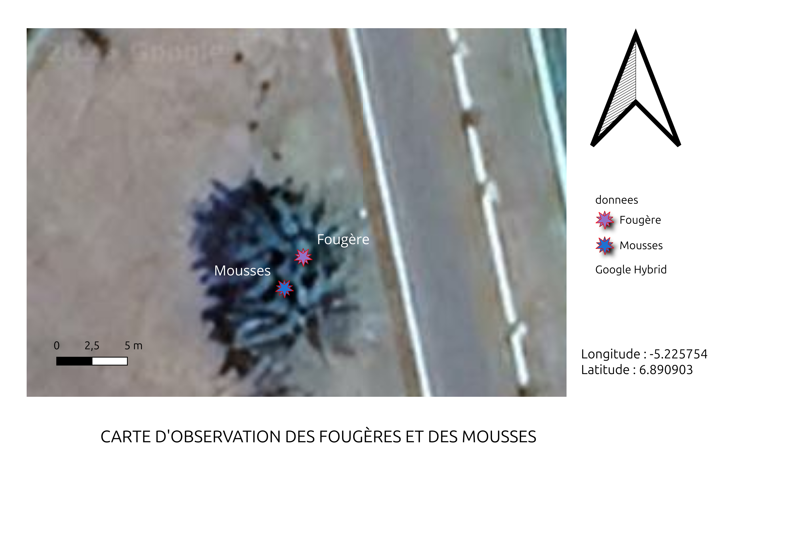

Le problème résolu : se dessécher
Les mousses (bryophytes) inventent la cuticule cireuse, qui limite les pertes d'eau, et les stomates, qui régulent les échanges de gaz. Elles restent petites et vivent dans les milieux humides. Âge : environ 470 millions d'années, Ordovicien (ordre de grandeur).

Mousses : les premières sorties de l'eau
Reproduction
Génération dominante : le gamétophyte (la plante verte). Dissémination par spores. Le gamète mâle nage encore.

Observé sur le terrain
E10-02 | Mousses | inconnue | Trouvé | -5.225766 | 6.890883 | 3 | 2026-11-21 11:11:11 | Il pousse en hauteur directement sur le palmier il est a l'ombre | humide | tronc |